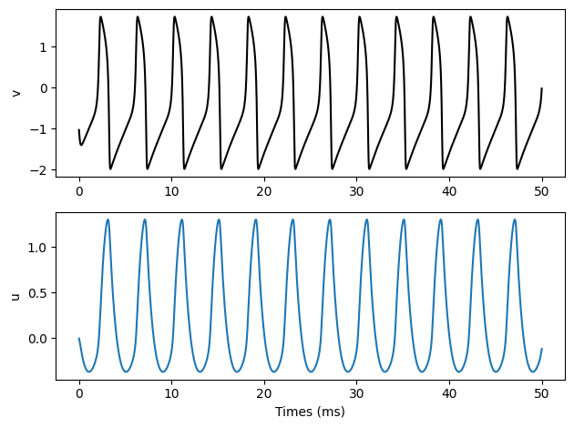
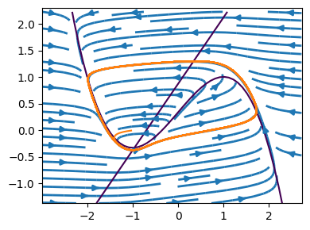

FitzHugh-Nagumoモデル¶
FitzHugh-Nagumoモデルの定義¶
\[\begin{split}
\begin{align*} \frac{dv}{dt} &= c\left(v-\frac{v^3}{3}-u+I\right)\\
\frac{du}{dt} &= v-bu+a \end{align*}
\end{split}\]
ここで\(a,b,c\)は定数であり，\(a=0.7, b=0.8, c=10\)がよく使われる．\(v\)は膜電位で，\(u\)は回復変数(recovery variable)である． \(I\)は外部刺激電流に対応する．
まず必要なパッケージを読み込む．
using Base: @kwdef
using Parameters: @unpack # or using UnPack
変更しない定数を保持する struct の FHNParameter と, 変数を保持する mutable struct の FHN を作成する．
@kwdef struct FHNParameter{FT}
a::FT = 0.7
b::FT = 0.8
c::FT = 10.0
end
@kwdef mutable struct FHN{FT}
param::FHNParameter = FHNParameter{FT}()
N::UInt16
v::Vector{FT} = fill(-1.0, N)
u::Vector{FT} = zeros(N)
end
次に変数を更新する関数update!を書く．ソルバーとしては陽的Euler法または4次のRunge-Kutta法を用いる．以下ではEuler法を用いている．Juliaではforループを用いて1つのニューロンごとにパラメータを更新する方がベクトルを用いるよりも高速である．
function update!(variable::FHN, param::FHNParameter, I::Vector, dt)
@unpack N, v, u = variable
@unpack a, b, c = param
@inbounds for i = 1:N
v[i] += dt * c * (-u[i] + v[i] - v[i]^3 / 3 + I[i])
u[i] += dt * (v[i] - b*u[i] + a)
end
end
update! (generic function with 1 method)
FitzHugh-Nagumoモデルのシミュレーションの実行¶
いくつかの定数を設定してシミュレーションを実行する．
T = 50 # ms
dt = 0.01f0 # ms
nt = UInt32(T/dt) # number of timesteps
N = 1 # ニューロンの数
# 入力刺激
t = Array{Float32}(1:nt)*dt
I = repeat(0.35f0*ones(nt), 1, N) # injection current
# 記録用
varr = zeros(Float32, nt, N)
uarr = zeros(Float32, nt, N)
gatearr = zeros(Float32, nt, 3, N)
# modelの定義
neurons = FHN{Float32}(N=N)
# simulation
@time for i = 1:nt
update!(neurons, neurons.param, I[i, :], dt)
varr[i, :] = neurons.v
uarr[i, :] = neurons.u
end
0.082620 seconds (250.23 k allocations: 12.908 MiB, 9.90% gc time, 84.03% compilation time)
結果を描画する．
using PyPlot
subplot(2, 1, 1)
plot(t, varr[:, 1], label=false, color="black"); ylabel("v")
subplot(2, 1, 2)
plot(t, uarr[:, 1], label=false); ylabel("u"); xlabel("Times (ms)")
tight_layout()

発火回数を求める．
spike = (varr[1:nt-1, :] .< 0) .& (varr[2:nt, :] .> 0)
num_spikes = sum(spike, dims=1)
println("Num. of spikes : ", num_spikes[1]);
Num. of spikes : 12
相図の描画¶
margin = 1.0
vmax, vmin = maximum(varr) + margin, minimum(varr) - margin
umax, umin = maximum(uarr) + margin, minimum(uarr) - margin
vrange = vmin:0.1:vmax
urange = umin:0.1:umax
U = [i for i in urange, j in 1:length(vrange)]
V = [j for i in 1:length(urange), j in vrange]
a = 0.7; b = 0.8; c = 10.0; I = 0.34
dV = c * (-U + V - V .^3 / 3 .+ I)
dU = V - b*U .+ a
figure(figsize=(4,3))
streamplot(V, U, dV, dU, density=[0.8, 0.8], linewidth=2)
contour(V, U, dU, levels=[0])
contour(V, U, dV, levels=[0])
plot(varr, uarr); xlim(vmin, vmax); ylim(umin, umax)
tight_layout()
